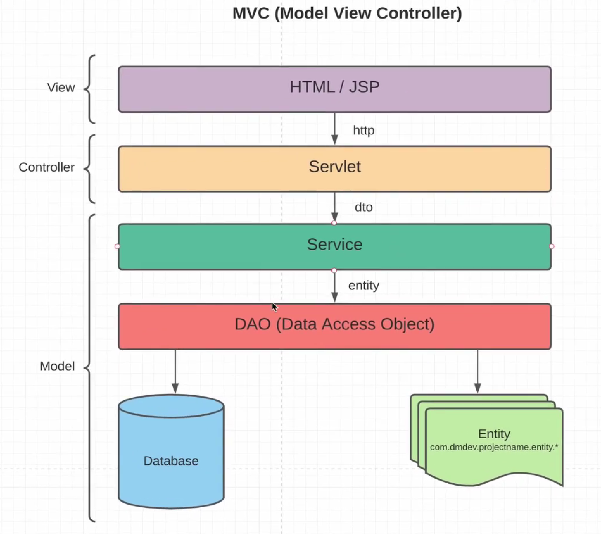

Актуальная архитектура простых веб-приложений выглядят следующим образом:
У нас всё так же есть уровень DAO, который будет осуществлять маппинг между сущностями и базами данных. А так же уровень сервисов, которые будут обращаться к DAO (никто кроме сервисов не может обращаться к DAO). Теперь у нас есть уровень сервлетов, который может обращаться к нашим сервисам, если им необходима какая-то информация. А так же есть уровень представления, т.е. представления информации нашему конечному пользователю и этот уровень в нашем примере будет в виде HTML или JSP.
С нашей странички на сервлет приходит какой-то HTTP запрос и сервлет будет отдавать HTTP ответ. В свою очередь сервлет с сервисом обращается с помощью dto (шаблон проектирования: Data Transform Object. Для передачи данных между разными слоями приложения), в свою очередь сервис обращается к DAO и работает с DAO при помощи сущностей, т.е. классов entity.
Поддерживая такую иерархию у нас выделяются такие разные слои нашего приложения. Такая слоистая структура для приложений называется MVC (Model View Controller).
В сервлетах не должно быть никакой логики. Их задача - только получить запрос от View, преобразовать запросы в удобную для дальнейшей передачи на Model и тоже самое наоборот. Т.е. получить какие-то данные из нашей модели и преобразовать её в необходимый вид для View (в нашем примере в HTTP Response). Вся логика должна быть заключена на уровне сервисов. Уровень сервисов - это основной уровень, где будет вся бизнес-логика приложения.
Как пример, будет реализован функционал: